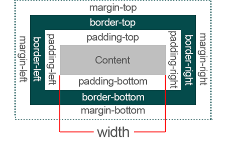

Bases de CSS3

Le CSS3 est un outil pour la mise en forme de votre site web qui vient agrémenter le contenu sémantique introduit grâce au HTML. On travaille la mise en page grâce à une imbrication de "boites" qui contiennent les différents éléments à organiser. Il existe deux types de boites :
L'idéal est de définir des règles de mise en page pour des "classes" d'éléments. Une classe correspond à un groupe d'éléments qui possèdent des caractéristiques communes. Par exemple, si on veut dessiner plusieurs carrés de la même taille mais de couleurs différentes, on définira une classe "carré" qui définira la taille de ces carrés, puis une classe par couleur (bleu, rouge, vert par exemple). On pourra en plus réutiliser chaque couleur pour d'autres formes géométriques définies dans d'autres classes. Par exemple, en ajoutant un classe "triangle", on pourra très facilement créer des triangles rouges, verts et bleus avec exactement les mêmes teintes que nos carrés sans avaoir à les redéfinir, super non ?!?
Pour cela, le plus simple est de créer un fichier qui répertorie les caractéristiques de toutes les classes définies. Ce fichier doit avoir une extension ".css". On va par exemple l'appeler "style.css". Pour que le lien se fasse avec notre fichier html, il faut l'appeler dans entre les balises <head> et </head> grâce à la commande : <link rel="stylesheet" type="text/css" href="style.css"/>. Cette balise "link" est autofermante.
Pour attribuer des caractéristiques à une classe il suffit de les indiquer dans le fichier ".css" de la manière suivante :
.nomClasse {
caracteristique1;
caractéristique2;
}
Par exemple pour créer une classe de carrés de 150pixels de coté et une classe rouge, on note :
.carre{
height:150px;
width:150px;
}
.rouge{
color: red;
}
On peut alors créer une boite qui va contenir un carré rouge dans notre fichier ".html" en indiquant <div class="carre rouge"> </div>
Chaque élément défini dans une boite possède une marge intérieure (padding), une bordure (border) et une marge extérieure (margin) qui s'organisent de cette manière :
On peut modifier chacunes des marges et des bordures dans une classe en leur attribuant une taille donnée. Par exemple :
.carre{
height:150px;
width:150px;
margin-top: 20px; <!--marge de 20 pixels au dessus de l'élément-->
border : 3px solid black; <!-- bordure noire de 3 pixels d'épaisseur en trait continu-->
}
Plus d'infos ici !
La position d'une boite sur votre site internet est complètement liée au flux. Késako ? Il s'agit tout simplement de l'ordre dans lequel les éléments s'affichent sur la page. Les éléments "in ligne" seont placés les uns à côtés des autres tant qu'il y a de la place sur la ligne. Les éléments "block" sont placés les uns au-dessus des autres.
Il y a trois types de positions pour les boites que vous avez définies :
Un sélecteur permet d'appeler des éléments en HTML afin de leur attribuer des propriétés avec CSS. Pour créer des carrés, nous avons déjà utilisé un sélecteur de type classe dont le nom était ".carré". Il existe de nombreux types de sélecteurs qui permettent d'attribuer des caractéristiques particulières à différents éléments. On distingue notamment :
La flexbox c'est un truc magique pour la gestion de la mise en page qui vous facilitera la vie à condition de bien en comprendre le fonctionnement. Personnellement, j'en comprends certaines fonctionnalités mais j'ai encore beaucoup de chemin à parcourrir avant de la maitriser vraiment. Je vais donc faire bref et vous renvoyer vers :
Une doc remplie d'infos ici ! .
L'idée de la flexbox est de donner au contenant la possibilité de redimentionner et modifier ses items pour mieux remplir la place disponible.
L'outil flexbox s'utilise avec un contenant (le parent) et des items (les enfants) qui sont situés dans le contenant. Chacun des éléments (parents et enfants) ont des attributs différents qui correspondent à des comportements précis.
Prenons un exemple pour créer une boite générale dans laquelle on souhaiterait intégrer deux boites contenant chacune du texte.
Exemple de code HTML5:
<div class="flexbox rouge"> <!--Contenant (parent) avec un fond rouge-->
<div class="item vert"> <!--Item 1 avec un fond vert-->
<p> Mon premier texte </p>
</div>
<div class="item bleu"> <!--Item 2 avec un fond bleu-->
<p> Mon second texte </p>
</div>
</div>
Et le code CSS3 associé:
.flexbox{
display: flex; <!--On indique qu'il s'agit d'une flexbox-->
}
.item {
flex-basis: 50%; <!--On choisi que chaque item occupe 50% de l'espace de son parent-->
}
.rouge {
background-color: Tomato;
}
.vert {
background-color: YellowGreen;
}
.bleu {
background-color: rgba(70,130,180,0.8);
}
Et ça donne:
Mon premier texte
Mon second texte
La pseudo-classe sert à mettre en évidence un élément lorsqu'il est survolé par la souris. Créons d'abord un carré jaune :
<!--code HTML dans le body>
<div class="carre jaune"> </div>
<!--code CSS>
.carre {
height: 150px;
width: 150px;
}
.jaune {
background-color: Gold;
}
Pour créer sa pseudo-classe de manière à ce qu'il se colore en vert lorsqu'on le survole, on ajoute dans le CSS
.jaune:hover{
background-color: Green;
}
Ce qui donne :
Un pseudo-élément permet d'ajouter des caractères à un groupe d'éléments. Par exemple pour ajouter ** devant tous nos paragraphes on peut écrire dans le CSS :
.p::before{
content:"**";
}
Dans le cas d'un formulaire, on peut créer une pseudo-classe pour un élément en fonction de sa validité. Cela s'écrit :
.input:valid{
background-color: Green; (par exemple)
}
.input:invalid{
background-color: red; (par exemple)
}
Plus d'infos ici pour les pseudo-classes
et ici pour les pseudo-éléments
Pour faire une transition entre deux états d'un éléments il faut rajouter les caractéristiques de la transition dans la classe de l'élément. Les transitions CSS permettent de choisir les propriétés à animer en les listant explicitement, le début de l'animation, la durée de l'animation et la façon dont la transition s'exécutera
Prenons un exemple simple pour grossir notre carré jaune et le faire tourner pour qu'il devienne un gros carré vert en 2secondes:
<!--code HTML dans le body>
<div class="carre jaune"> </div>
<!--code CSS>
.carre {
height: 150px;
width: 150px;
transition : width 2s, height 2s, background-color 2s, transform 2s;
}
.jaune {
background-color: Gold;
}
.jaune:hover{
background-color: Green;
height: 300px;
width: 300px;
transform: rotate(180deg);
}
Ce qui donne :
Enfin, pour animer notre carré jaune, il faut lui donner les "instructions" de l'animation dans le css. Par exemple, pour le faire déplacer de entre les bords droits et gauches de notre boite, il suffit de lui ajouter une classe (qui s'appelle ici "anime") qui contient les informations nécessaires:
<!--code HTML dans le body>
<div class="carre jaune anime"> </div>
<!--code CSS>
.carre {
height: 150px;
width: 150px;
transition : width 2s, height 2s, background-color 2s, transform 2s;
}
.jaune {
background-color: Gold;
}
.anime {
animation: 4s linear 0s infinite anime;
}
@keyframes anime{from {margin-left:0%;} to {margin-left:100%;}}
Ce qui donne :